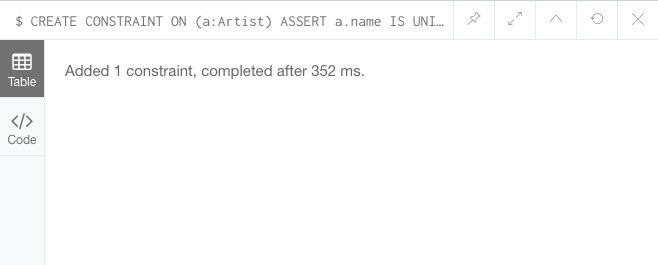
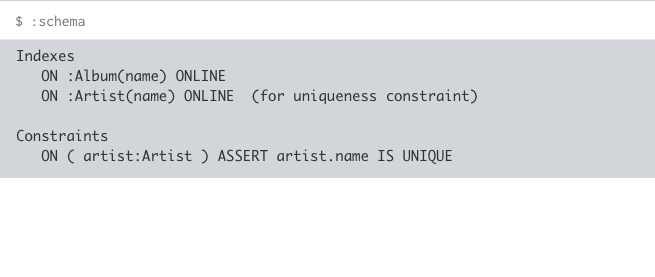

约束允许你对节点或关系的输入数据进行限制。
约束有助于数据的完整性，因为它们阻止用户输入错误的数据类型。如果某个用户在应用了约束时输入了错误的类型会收到错误消息。
约束类型
在 Neo4j 中你可以创建唯一约束和属性存在约束。
唯一约束
- 指定该属性必须包含唯一值（比如两个 Artist 节点不允许有相同值的 name 属性。）
属性存在约束
- 确保具有特定标签的节点或具有特定类型的关系都存在某个属性（属性存在约束只在 Neo4j 企业版中可用）
创建唯一约束
在 Neo4j 中创建唯一约束需要使用 CREATE CONSTRAINT ON 语句，像下边这样：
1 | CREATE CONSTRAINT ON (a:Artist) ASSERT a.name IS UNIQUE |
在上边的例子中，我们为 Artist 标签的所有节点的 name 属性创建了唯一约束。
我们的语句执行成功后，展示如下信息：

当你创建一个唯一约束时，Neo4j 将同时创建一个索引。Cypher 将使用该索引进行查询，就像使用其他索引一样。
因此不需要单独创建索引了，如果你尝试在已经有索引的情况下创建约束，你将会收到一个错误。
查看约束
约束（和索引）成为数据库模式的一部分。
我们可以通过使用 :schema 名来来查看我们刚刚创建的约束，就像下边这样：
1 | :schems |
你将会看到新创建的约束以及使用它创建的索引，也可以看到我们之前创建的索引：

测试约束
我们可以通过尝试创建两个相同的艺术家来测试这个约束是否起作用。
执行下边的语句两次：
1 | CREATE (a:Artist {name: "周杰伦"}) |
第一次运行这条语句时，节点将会被创建。第二次运行时，你应该会收到以下错误信息：

属性存在约束
属性存在约束能够确保具有特定标签的所有节点具有特定的属性。比如你可以指定 Artist 标签的所有节点都必须包含 name 属性。
使用 ASSERT exists(variable.propertyName) 语法来创建属性存在约束。像下边这样：
1 | CREATE CONSTRAINT ON (a:Artist) ASSERT exists(a.name) |
请注意，属性存在约束只能在 Neo4j 企业版中使用。